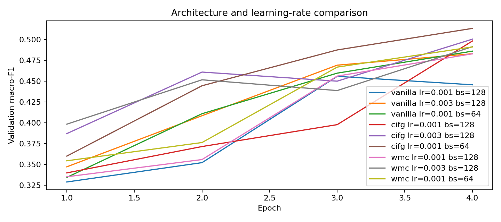
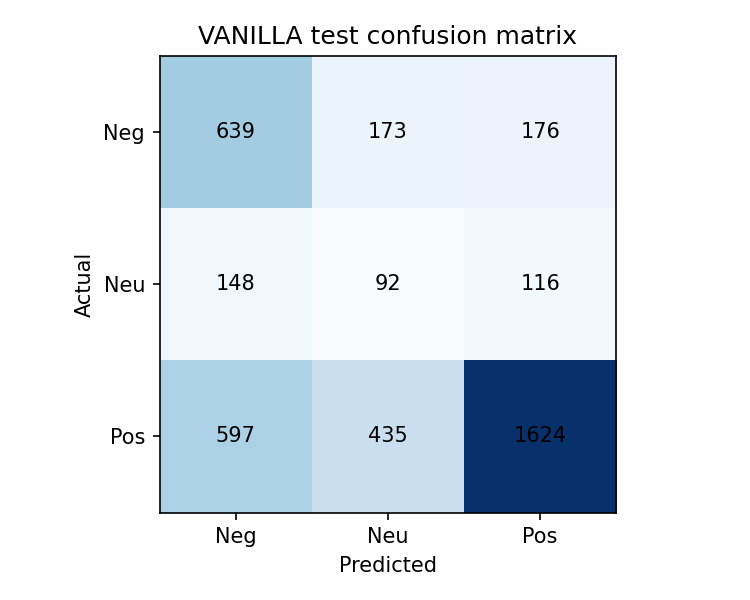
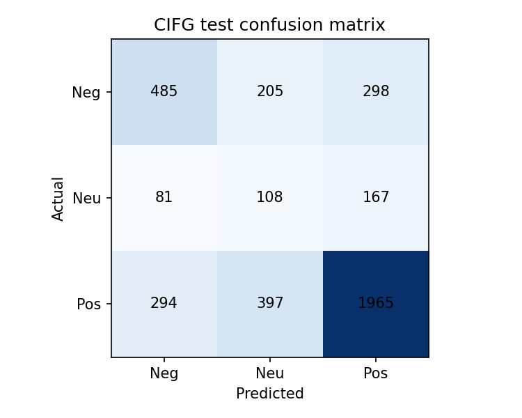
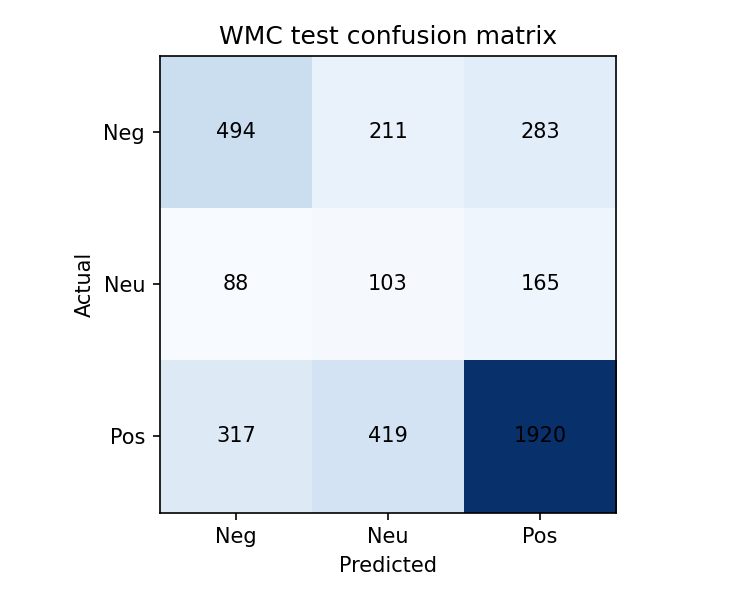

Zouhair Eouichak / TP B / UIR 2026-2027
model,learning_rate,batch_size,parameters,accuracy,macro_f1 vanilla,0.001,64,801219,0.58875,0.4744798191937389 cifg,0.001,64,792963,0.6395,0.5000759382970714 wmc,0.003,128,813507,0.62925,0.49235932903632756
{
"majority_accuracy": 0.664,
"majority_macro_f1": 0.266025641025641
}


